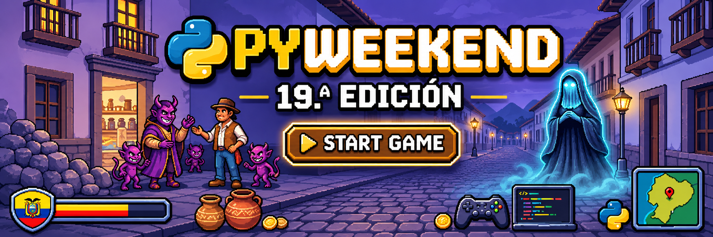
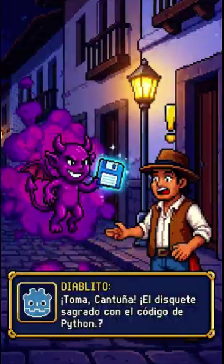

19.ª edición · ESPOL · 100 % virtual
Leyendas urbanas del Ecuador
Adapten una leyenda ecuatoriana a un juego de rol original en Godot. Creen una historia que se pueda jugar de principio a fin en 10 a 15 minutos.
Ver fechas clavePreparar mi entregaEl reto
Su equipo puede recrear el relato original o reinventarlo desde el punto de vista de otro personaje. La leyenda debe seguir siendo reconocible y estar en el centro del juego.
Para empezar, pueden explorar historias como La Dama Tapada de Guayaquil, La Caja Ronca de Ibarra o Cantuña y el atrio de San Francisco en Quito. También pueden elegir otra leyenda del Ecuador.
Construyan un RPG con exploración e interacciones que hagan avanzar la historia. Desarróllenlo en Godot 4.3 o superior con GDScript, en la edición estándar.

Fechas clave
Noviembre y diciembre de 2026 · Horarios de Ecuador continental (UTC−5).
- 11–23 nov · 23:55
Registro de equipos. El capitán inscribe al equipo; consulten las directrices para el formulario de inscripción.
- 19–20 nov
Talleres de Godot y GitHub Pages. Consulten las grabaciones de los talleres.
- 23 nov–13 dic
Desarrollo del juego. Preparen el repositorio y prueben sus avances publicados.
Prueba obligatoria de despliegue. Publiquen una versión preliminar jugable en GitHub Pages y registren el enlace. Una sola escena es suficiente.
Entrega final. El capitán registra la entrega. El repositorio queda congelado desde el cierre hasta que concluya la Final de Titanes.
- 14–15 dic
Evaluación y votación del público. La votación cierra el 15 a las 23:55.
Anuncio de finalistas. Clasifican los seis juegos mejor calificados por los jueces y el favorito del público.
Final de Titanes. Los finalistas presentan su juego en una sesión virtual.
Obligatorio: registrar la prueba hasta el 6 de diciembre a las 23:55. Sin este registro no podrán realizar la entrega final. Consulten las directrices enviadas a los equipos inscritos para acceder a los formularios de prueba y entrega; sus enlaces aún no están disponibles en este sitio.
Lista de entrega
Marquen cada paso mientras preparan su proyecto.
Repositorio y versión web
Versión final y registro
Grabaciones de los talleres
Viernes 20 de noviembre
Ver la grabación en Google DrivePreguntas frecuentes
¿Quiénes pueden participar?
Los equipos tienen de 3 a 4 estudiantes activos de Fundamentos de Programación de ESPOL, con el mismo profesor. Cada profesor puede tener un equipo inscrito y cada equipo debe designar un capitán.
¿Qué pasa si todavía tengo una sola escena?
Pueden usarla para la prueba de despliegue si se puede jugar desde GitHub Pages. Registren el enlace antes del 6 de diciembre a las 23:55 para habilitar la entrega final.
¿Qué recursos visuales y sonoros puedo usar?
Usen recursos propios o con licencia Creative Commons. Los recursos de pago de terceros quedan fuera de las bases. Incluyan créditos al final del juego para el equipo y los artistas, y mencionen a ESPOL, al PyWeekend y a la leyenda adaptada.
¿Qué hago si GitHub Pages muestra un error o una pantalla negra?
Revisen que Pages publique desde /docs, que el archivo de entrada se llame index.html y que la exportación Web tenga Thread Support desactivado. Prueben en Chrome o Edge de escritorio.
¿Qué evaluarán los jueces?
La adaptación y originalidad de la leyenda, la funcionalidad y usabilidad, la trama y las mecánicas de RPG, las buenas prácticas de programación, la estética y la duración. Los recursos audiovisuales creados por el equipo cuentan como criterio extra.
¿Cómo se presenta el juego en la Final de Titanes?
Los equipos finalistas disponen de cinco minutos para explicar el proceso de creación y tres minutos para jugar en vivo desde GitHub Pages. Se presenta la versión del release entregado.